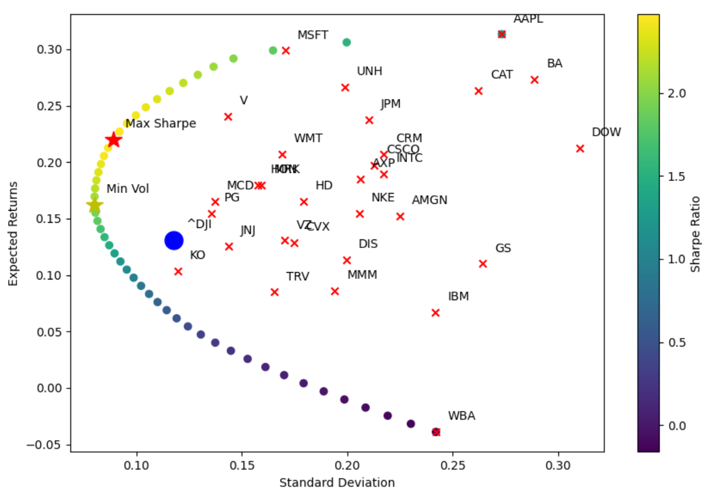

Portfolio Allocation Models¶
The aim of portfolio allocation is to construct a portfolio by determining the proportions of our portfolio that each asset should hold, according to quantifiable characteristics such as risk, return, covariance matrices, as well as mathematical methodologies such as optimization (i.e. CLA) and machine learning techniques (i.e. hierarchical clustering).
Let’s use the Dow Jones Industrial Average as our market proxy. It will be our main use case throughout this tutorial.
>>> # Construct the DJIA index portfolio
>>> market_portfolio = Portfolio(assets='^DJI')
>>> market_portfolio.set_frequency(frequency='M', inplace=True) # resample to Monthly
>>> market_portfolio.slice_dataframe(from_date=datetime(2016, 1, 1), to_date=datetime(2020, 1, 1), inplace=True)
>>> # Construct the DJIA constituents portfolio
>>> assets = macro.companies_in_index(MarketIndices.DOW_JONES)
>>> portfolio = Portfolio(assets=assets)
>>> portfolio.set_frequency(frequency='M', inplace=True)
>>> portfolio.slice_dataframe(from_date=datetime(2016, 1, 1), to_date=datetime(2020, 1, 1), inplace=True)
>>> print(portfolio.df_returns.tail(10))
MMM AXP AMGN ... WBA WMT DIS
Date ...
2019-03-31 23:59:59 0.001881 0.014479 -0.000526 ... -0.111251 -0.009448 -0.016040
2019-04-30 23:59:59 -0.087929 0.076349 -0.056111 ... -0.153311 0.054445 0.233631
2019-05-31 23:59:59 -0.149824 -0.021496 -0.062373 ... -0.071178 -0.008374 -0.035993
2019-06-30 23:59:59 0.085070 0.076105 0.105459 ... 0.108026 0.089215 0.057558
2019-07-31 23:59:59 0.007961 0.010685 0.012481 ... -0.003292 -0.000996 0.030476
2019-08-31 23:59:59 -0.065935 -0.032162 0.126048 ... -0.051960 0.040247 -0.040207
2019-09-30 23:59:59 0.016572 -0.017363 -0.072428 ... 0.080484 0.038684 -0.050561
2019-10-31 23:59:59 0.003589 -0.004662 0.102010 ... -0.009582 -0.011965 -0.003069
2019-11-30 23:59:59 0.037880 0.024216 0.107994 ... 0.096093 0.015606 0.166718
2019-12-31 23:59:59 0.039171 0.036380 0.027054 ... -0.010738 0.002377 -0.040134
[10 rows x 30 columns]
Modern Portfolio Theory¶
In a 1952 essay, economist Harry Markowitz introduced Modern Portfolio Theory (MPT). Also termed mean-variance analysis, it is a mathematical framework for determining the proportion of an asset in the portfolio, so that the expected return is maximized for a given level of risk. It formalizes the idea of diversification, i.e. that owning different types of financial assets is less risky than owning only one. Essentially, an asset’s risk and return should not be assessed by itself, but by how it contributes to the risk and overall return of a portfolio.
Markowitz Mean-Variance Framework (1952)¶
-
class
matilda.quantitative_analysis.portfolio_optimization.ModernPortfolioTheory(portfolio: matilda.portfolio_management.Portfolio.Portfolio)¶ The portfolio’s expected return is the proportion-weighted combination of the constituents assets’ returns. It is the weighted-average of the returns of the portfolio’s constituents.
\[E(R_p) = \sum_{i} w_i * E(R_i)\]where \(R_p\) is the return of the portfolio, \(R_i\) is the return of asset \(i\), and \(w_i\) is the weighting of component asset \(i\).
The portfolio’s return variance is used as a proxy for risk. It is not simply a linear combination of individual risks, but a function of the correlations \(\rho_{ij}\) of the component assets, for all asset pairs \((i, j)\).
\[\sigma_p^2 = \sum_{i} (w_i^2 + \sigma_i^2) + \sum_{i} \sum_{i \neq j} w_i * w_j * \sigma_i * \sigma_j * \rho_{ij}\]where \(\sigma\) is the (sample) standard deviation of the periodic returns on an asset, and \(\rho_{ij}\) is the correlation coefficient between the returns on assets \(i\) and \(j\).
With the idea of diversification, an investor can reduce portfolio risk simply by holding combinations of instruments that are not perfectly positively correlated (correlation coefficient \(-1 <= \rho_{ij} < 1\)). In other words, investors can reduce their exposure to individual asset risk by holding a diversified portfolio of assets. Diversification may allow for the same portfolio expected return with reduced risk.
-
matilda.quantitative_analysis.portfolio_optimization.ModernPortfolioTheory.solve_weights(self, use_sharpe=False, leverage=0, long_short_exposure=0)¶ - Parameters
use_sharpe – to optimize for Sharpe ratio, input True. By default minimizes volatility.
leverage – leverage constraints. By default, 1 (no leverage).
long_short_exposure – exposure between long and short positions. By default, 1 (long-only).
- Returns
>>> MPT = ModernPortfolioTheory(portfolio)
>>> weights = MPT.solve_weights(use_sharpe=True)
>>> print(weights)
MMM 8.252014e-11
AXP 5.754070e-12
AMGN 1.026955e-11
AAPL 1.065381e-09
BA 0.000000e+00
CAT 5.458483e-11
CVX 1.986690e-11
CSCO 3.633562e-11
KO 4.627803e-01
DOW 5.289753e-12
GS 4.808235e-11
HD 1.116429e-11
HON 0.000000e+00
IBM 8.356778e-12
INTC 8.504801e-12
JNJ 1.047248e-11
JPM 1.002877e-02
MCD 0.000000e+00
MRK 0.000000e+00
MSFT 0.000000e+00
NKE 0.000000e+00
PG 5.280897e-02
CRM 2.149651e-11
TRV 5.207088e-02
UNH 1.965341e-01
VZ 0.000000e+00
V 2.266829e-12
WBA 0.000000e+00
WMT 2.257769e-01
DIS 0.000000e+00
dtype: float64
Efficient Frontier¶
>>> stats_df = MPT.markowitz_efficient_frontier(market_portfolio=market_portfolio, plot_assets=True, plot_cal=True)
>>> pd.set_option('display.max_columns', None) # show all columns
>>> print(stats_df.head())
Target Return Minimum Volatilty Sharpe Ratio \
0 -0.038987 0.242079 -0.161053
1 -0.031797 0.230182 -0.138139
2 -0.024607 0.219190 -0.112263
3 -0.017417 0.208682 -0.083460
4 -0.010226 0.198630 -0.051484
Optimal Weights
0 [0.0, 5.676814812498321e-17, 6.248307942010797...
1 [0.0, 2.1251952869548186e-16, 7.33663515761706...
2 [1.0495623187945156e-16, 1.022455433619923e-16...
3 [0.0, 0.0, 2.0295223730939766e-16, 0.0, 1.3976...
4 [1.7626656648200915e-16, 1.4969544279368077e-1...
The resulting graph follows:
Capital Allocation Line¶
The tangent to the upper part of the hyperbolic boundary is the Capital Allocation Line (CAL), determining how to allocate funds between a risky asset and a risk-free asset. It is given by the equation:
where \(P\) is the sub-portfolio of risky assets at the tangency with the Markowitz bullet, \(F\) is the risk-free asset, and \(C\) is a combination of portfolios \(P\) and \(F\). It is also known as the Capital Market Line (CML).
Security Market Line¶
The Security Market Line (SML)
Capital Asset Pricing Model¶
As we’ve seen in the Asset Pricing Models module, the CAPM states that the expected return of any given asset should equal \(R_i = R_f + \beta_i * (R_m - R_f)\), with \(\alpha\) being the error term having an expected value of zero in theory. Thus, the only way to achieve higher expected returns is taking on more \(\beta\) (given that \((R_m - R_f) > 0\)). Every individual stock has some idiosyncratic risk in addition to its market \(\beta\) (true always when correlated less than perfectly with the market).
Note
The total risk is a combination of systematic and unsystematic (idiosyncratic) risk. * Systematic risk is given by the estimated coefficient of a regression of a security on a market portfolio,
\(\beta_{security, market} = \frac{\sigma_{security, market}}{\sigma_{market}^2}\).
The idiosyncratic risk is the portion of risk unexplained by the market factor, \(1 - R^2\). Empirically, the idiosyncratic risk in a single-factor contemporaneous CAPM model with US equities is around 60-70%.
Through diversification (i.e. by the mean-variance optimization process), unsystematic risk is eliminated. Thus, we can get the best return/risk ratio by buying the market portfolio, as buying anything else, we could not get more expected return for the same \(\beta\), but would only get some additional idiosyncratic risk.
To maximize investor’s utility function, Modern Portfolio Theory suggests holding the combination of a risk-free asset and optimal risky portfolio (ORP) lying on a tangency of the efficient frontier and capital market line. Modern Portfolio Theory also suggests that optimal risky portfolio is a market portfolio (e.g. capitalization-weighted index).
If we assume markets are fully efficient and all assets are fairly priced, we don’t have any reason to deviate from the market portfolio in our asset allocation. In such case, we don’t even need to know equilibrium asset returns nor perform any kind of portfolio optimization. An optimization based on equilibrium asset returns would lead back to the same market portfolio anyway.
Note
Using historical data to estimate expected returns implies nonzero expected \(\alpha\)-s for all assets. This is not coherent with the CAPM framework, so using this methodology within MPT, it has nothing to do with CAPM. In effect by using MPT this way, you are generating a momentum based investment strategy, as you assume that assets that have had good returns historically will continue to have good returns in the future.
This framework has then been improved by other economists and mathematicians who went on to account for its limitations.
Treynor-Black Model (1973)¶
Unlike the Markowitz’s approach for portfolio allocation, the Treynor-Black model is a type of active portfolio management.
-
class
matilda.quantitative_analysis.portfolio_optimization.TreynorBlackModel(portfolio: matilda.portfolio_management.Portfolio.Portfolio)¶ Under the Treynor-Black model, an investor considers that most securities are priced efficiently, but believes they have information that can be used to predict the abnormal performance (captured by the alpha of some factor model) of a few of them. The model combines an actively managed portfolio built with a few mispriced securities and a passively managed market index fund. As such, the overall portfolio consists of an active portfolio of weight \(w_A\) and a passive portfolio with weight \(w_P = 1 - w_A\).
The higher the \(\alpha\) of a security, the higher the weight we assign to it.
The more risky the security is (unsystematic risk), the lower the weight we assign to it.
The weight we assign to a security i should therefore be proportional to \(\frac{\alpha_i}{\sigma(\epsilon_i)^2}\). By default, we take the \(\alpha\) of the Capital Asset Pricing Model, \(r_i + \beta_i * (R_M - R_F) + \alpha_i + \epsilon_i\).
Then it was shown by Treynor and Black that the active portfolio is constructed using the weights \(w_i = \frac{\frac{\alpha_i}{\sigma_i^2}}{\sum_{j=1}^{N} \frac{\alpha_j}{\sigma_j^2}}\). Using these weights, we can construct the active portfolio and calculate the following:
\[\alpha_A = \sum_{i=1}^{N} w_i * \alpha_i , \beta_A = \sum_{i=1}^{N} w_i * \beta_i , \sigma(\epsilon_A)^2 = \sum_{i=1}^{N} w_i^2 * \sigma(\epsilon_i)^2\]They then determine the size of the active portfolio in the overall portfolio,
\[w_A = \frac{\frac{\alpha_A}{\sigma_A^2}}{\frac{E(r_P) - r_f}{\sigma_P^2}}\]where \(r_p\) is the return of the passive portfolio, \(r_f\) is the risk-free rate, and \(\sigma_P^2\) is the volatility of the passive portfolio.
To avoid the overall portfolio from exhibiting a lot of unsystematic risk, we correct the formula to ensure the beta of the overall portfolio doesn’t change.
\[w_A = \frac{w_A}{1 + (1 - \beta_A) * w_A}\]The model is not bounded \(0 ≤ w_A ≤ 1\) and \(0 ≤ w_M ≤ 0\) i.e short positions in the market portfolio or active portfolio could be initiated to leverage a position in the other portfolio. This is often regarded as the major flaw of the model, as it often yields an unrealistic weight in the active portfolio. Imposing lower and upper bounds for \(w_A\) is a measure to counter this.
Black-Litterman Model (1990)¶
The Black–Litterman model optimization is an extension of unconstrained Markowitz optimization that incorporates relative and absolute ‘views’ on inputs of risk and returns from.
Post Modern Portfolio Theory (1991)¶
Post-modern portfolio theory extends MPT by adopting non-normally distributed, asymmetric, and fat-tailed measures of risk. Two major limitations of MPT are in measuring risk and return in a way that doesn’t represent the realities of the investment markets. Specifically, it assumes the following:
Risk proxy: The variance of portfolio returns is the correct measure of investment risk. Using the variance (or its square root, the standard deviation) implies that uncertainty about better-than-expected returns is equally averred as uncertainty about returns that are worse than expected. It has long been recognized that investors typically do not view as risky those returns above the minimum they must earn in order to achieve their investment objectives. They believe that risk has to do with the bad outcomes (i.e., returns below a required target), not the good outcomes (i.e., returns in excess of the target) and that losses weigh more heavily than gains.
Statistical distribution: The investment returns of all securities and portfolios can be adequately represented by a joint elliptical distribution, such as the normal distribution. The assumption of a normal distribution is a major practical limitation, because it is symmetrical. Using the normal distribution to model the pattern of investment returns makes investment results with more upside than downside returns appear more risky than they really are.
Recent advances in portfolio and financial theory, coupled with increased computing power, have overcome these limitations. The resulting expanded risk/return paradigm is known as Post-Modern Portfolio Theory, or PMPT. Thus, MPT becomes nothing more than a special (symmetrical) case of PMPT.
Note
The risk measures we will describe below are mainly used to evaluate mutual fund and portfolio manager performance. It is important to note that some variables will cause differing results, such as the frequency (daily, weekly, monthly, yearly) and the *window*(from which date to which date). For example, some services calculate ‘during the last 3 years, the 30 days X is Y’.
Also, regarding time horizon, if you have a mean for a horizon of say 10 days, and a volatility over a year, then you can convert that volatility to be over the horizon by multiplying by \(\sqrt{10/252}\).
As a case, let’s take as an example the following portfolio
>>> from portfolio_management.Portfolio import Portfolio
>>> from datetime import datetime
>>> assets = ['AAPL', 'V', 'KO', 'CAT']
>>> portfolio = Portfolio(assets=assets)
>>> portfolio.slice_dataframe(to_date=datetime(2021, 1, 1), from_date=datetime(2016, 1, 1))
>>> portfolio_returns = portfolio.get_weighted_sum_returns(weights=np.ones(len(assets)) / len(assets))
>>> print(portfolio_returns.head())
Date
1970-01-05 23:59:59 -0.004553
1970-01-06 23:59:59 -0.003728
1970-01-07 23:59:59 -0.006211
1970-01-08 23:59:59 0.001179
1970-01-09 23:59:59 -0.005915
dtype: float64
First, we cover some measures that are based on the Capital Asset Pricing Model:
-
matilda.quantitative_analysis.risk_quantification.jensens_alpha(portfolio_returns, benchmark_returns)¶ The Jensen’s alpha determines the abnormal return of a security or portfolio of securities over the theoretical expected return. It is a version of the standard alpha based on a theoretical performance index instead of a market index. The theoretical return is predicted by a market model, most commonly the capital asset pricing model (CAPM). The market model uses statistical methods to predict the appropriate risk-adjusted return of an asset.
The CAPM for instance uses beta as a multiplier. The CAPM return is supposed to be ‘risk adjusted’, which means it takes account of the relative riskiness of the asset. This is based on the concept that riskier assets should have higher expected returns than less risky assets. If an asset’s return is even higher than the risk adjusted return, that asset is said to have “positive alpha” or “abnormal returns”. Investors are constantly seeking investments that have higher alpha.
Since Eugene Fama, many academics believe financial markets are too efficient to allow for repeatedly earning positive Alpha, unless by chance.
- Parameters
portfolio_returns – Pandas series or dataframe representing percentage changes of the security (or portfolio) returns over time. It should be same time range and frequency as risk free rates
benchmark_returns – Pandas series representing percentage changes of the benchmark (i.e. S&P500) returns over time.
- Returns
-
matilda.quantitative_analysis.risk_quantification.capm_beta(portfolio_returns, benchmark_returns=None)¶ - Parameters
portfolio_returns – Pandas series or dataframe representing percentage changes of the security (or portfolio) returns over time. It should be same time range and frequency as risk free rates
benchmark_returns – Pandas series representing percentage changes of the benchmark (i.e. S&P500) returns over time.
- Returns
Risk Deviation Measures¶
-
matilda.quantitative_analysis.risk_quantification.standard_deviation(portfolio_returns, period=252)¶ - Parameters
portfolio_returns – Pandas series or dataframe representing percentage changes of the security (or portfolio) returns over time. It should be same time range and frequency as risk free rates
period – period to compute statistics of returns for. For instance, to compute yearly, then input 252, and to compute monthly, then input 21.
- Returns
-
matilda.quantitative_analysis.risk_quantification.average_absolute_deviation(portfolio_returns, period=252)¶
-
matilda.quantitative_analysis.risk_quantification.lower_semi_standard_deviation(portfolio_returns, period=252)¶
Risk Adjusted Returns Measures Based on Volatility¶
Volatility is simply the average dispersion of the returns around their mean
-
matilda.quantitative_analysis.risk_quantification.treynor_ratio(portfolio_returns, risk_free_rates, benchmark_returns=None, period=252)¶ The Treynor reward to volatility model is a measurement of the returns earned in excess of that which could have been earned on an investment that has no diversifiable risk (e.g., Treasury bills or a completely diversified portfolio), per unit of market risk assumed. In other words, it calculates the excess returns generated by a portfolio \(r_i - r_f\), where \(r_i\) is the portfolio \(i\)’s returns and \(r_f\) is the risk-free rate, then discounts it by portfolio \(i\)’s beta, \(\beta_i\).
Like the Sharpe ratio, the Treynor ratio (T) does not quantify the value added, if any, of active portfolio management. It is a ranking criterion only. A ranking of portfolios based on the Treynor Ratio is only useful if the portfolios under consideration are sub-portfolios of a broader, fully diversified portfolio. If this is not the case, portfolios with identical systematic risk, but different total risk, will be rated the same. But the portfolio with a higher total risk is less diversified and therefore has a higher unsystematic risk which is not priced in the market.
An alternative method of ranking portfolio management is Jensen’s alpha, which quantifies the added return as the excess return above the security market line in the capital asset pricing model. As these two methods both determine rankings based on systematic risk alone, they will rank portfolios identically.
- Parameters
portfolio_returns – Pandas series or dataframe representing percentage changes of the security (or portfolio) returns over time. It should be same time range and frequency as risk free rates
benchmark_returns – Pandas series representing percentage changes of the benchmark (i.e. S&P500) returns over time.
risk_free_rates – Pandas series representing percentage changes of a risk-free asset’s returns over time. It should be same time range and frequency as portfolio_returns
period – period to compute statistics of returns for. For instance, to compute yearly, then input 252, and to compute monthly, then input 21.
- Returns
\(T = \frac{r_i - r_f}{\beta_i}\)
-
matilda.quantitative_analysis.risk_quantification.sharpe_ratio(portfolio_returns, risk_free_rates, period=252)¶ The Sharpe ratio was developed by William F. Sharpe in 1966. It is an extension of the Traynor ratio, as it discounts expected excess returns by the volatility. It measures the performance of an investment (e.g., a security or portfolio) compared to a risk-free asset, after adjusting for its risk. In other words, it is the difference between the returns of the investment and the risk-free return, divided by the standard deviation of the investment (i.e., its volatility). It represents the additional amount of return that an investor receives per unit of increase in risk.
The ex-ante ratio is defined as \(\frac{E[R_a - R_b]}{\sigma_a}\) where \(R_{a}\) is the asset return, \(R_b\) is the risk-free return (such as a U.S. Treasury security). \(E[R_{a}-R_{b}]\) is the expected value of the excess of the asset return over the benchmark return, and \(\sigma _{a}\) is the standard deviation of the asset excess return. The ex-post ratio uses the same equation as the one above but with realized returns of the asset and benchmark rather than expected returns
- Parameters
portfolio_returns – Pandas series or dataframe representing percentage changes of the security (or portfolio) returns over time. It should be same time range and frequency as risk free rates Pandas series representing percentage changes of the security (or portfolio) returns over time. It should be same time range and frequency as risk free rates
risk_free_rates – Pandas series representing percentage changes of a risk-free asset’s returns over time. It should be same time range and frequency as portfolio_returns Pandas series representing percentage changes of a risk-free asset’s returns over time. It should be same time range and frequency as portfolio_returns
period – period to compute statistics of returns for. For instance, to compute yearly, then input 252, and to compute monthly, then input 21. Period to compute statistics of returns for. For instance, to compute yearly, then input 252, and to compute monthly, then input 21.
- Returns
\(S = \frac{E[R_a - R_b]}{\sigma_a}\)
-
matilda.quantitative_analysis.risk_quantification.information_ratio(portfolio_returns, benchmark_returns, period=252)¶ The information ratio is similar to the Sharpe ratio, the main difference being that the Sharpe ratio uses a risk-free return as benchmark whereas the information ratio uses a risky index as benchmark (such as the S&P500).
- Parameters
portfolio_returns – Pandas series or dataframe representing percentage changes of the security (or portfolio) returns over time. It should be same time range and frequency as risk free rates
benchmark_returns – Pandas series representing percentage changes of the benchmark (i.e. S&P500) returns over time. Pandas series representing percentage changes of the benchmark (i.e. S&P500) returns over time.
period – period to compute statistics of returns for. For instance, to compute yearly, then input 252, and to compute monthly, then input 21.
- Returns
-
matilda.quantitative_analysis.risk_quantification.modigliani_ratio(portfolio_returns, benchmark_returns, risk_free_rates, period=252)¶ The Modigliani risk-adjusted performance is a combination of the Sharpe and info ratios. It adjusts the expected excess returns of the portfolio above the risk free rate by the expected excess returns of a benchmark portfolio, above the risk free rate.
- Parameters
portfolio_returns – Pandas series or dataframe representing percentage changes of the security (or portfolio) returns over time. It should be same time range and frequency as risk free rates
benchmark_returns – Pandas series representing percentage changes of the benchmark (i.e. S&P500) returns over time.
risk_free_rates – Pandas series representing percentage changes of a risk-free asset’s returns over time. It should be same time range and frequency as portfolio_returns
period – period to compute statistics of returns for. For instance, to compute yearly, then input 252, and to compute monthly, then input 21.
- Returns
-
matilda.quantitative_analysis.risk_quantification.roys_safety_first_criterion(portfolio_returns: pandas.core.series.Series, minimum_threshold=0.02, period=252)¶ - Parameters
portfolio_returns – Pandas series or dataframe representing percentage changes of the security (or portfolio) returns over time. It should be same time range and frequency as risk free rates
minimum_threshold – minimum acceptable return, below which the returns are less desirable.
period – period to compute statistics of returns for. For instance, to compute yearly, then input 252, and to compute monthly, then input 21.
- Returns
>>> print(roys_safety_first_criterion(portfolio_returns=portfolio_returns, minimum_threshold=0.02, period=252))
0.7591708635828361
Value at Risk (VaR)¶
Measures of risk-adjusted return based on volatility treat all deviations from the mean as risk, whereas measures of risk-adjusted return based on lower partial moments consider only deviations below some predefined minimum return threshold, t as risk i.e. positive deviations aren’t risky. VaR is a more probabilistic view of loss as the risk of a portfolio
-
matilda.quantitative_analysis.risk_quantification.value_at_risk_historical_simulation(portfolio_returns, confidence_level=0.05)¶
-
matilda.quantitative_analysis.risk_quantification.value_at_risk_variance_covariance(portfolio_returns, confidence_level=0.05, period=252)¶
-
matilda.quantitative_analysis.risk_quantification.value_at_risk_monte_carlo(portfolio_returns)¶
-
matilda.quantitative_analysis.risk_quantification.conditional_value_at_risk(portfolio_returns, confidence_level=0.05, period=252)¶ Expected Shortfall, otherwise known as CVaR, or conditional value at risk, is simply the expected loss of the worst case scenarios of returns. ES answers this question — What is the average loss over the whole range of outcomes in the 1% tail? For example, if your portfolio has a VaR(95) of -3%, then the CVaR(95) would be the average value of all losses exceeding -3%.
- Parameters
portfolio_returns – Pandas series or dataframe representing percentage changes of the security (or portfolio) returns over time. It should be same time range and frequency as risk free rates
confidence_level –
period – period to compute statistics of returns for. For instance, to compute yearly, then input 252, and to compute monthly, then input 21.
- Returns
Risk Adjusted Returns Measures Based on VaR¶
Value at Risk computes the expected loss over a specified period of time given a confidence level
-
matilda.quantitative_analysis.risk_quantification.excess_return_value_at_risk(portfolio_returns, risk_free_rates, confidence_level: float = 0.05, period=252)¶ Discounts the excess return of the portfolio above the risk-free rate by the value at risk of the portfolio
- Parameters
portfolio_returns – Pandas series or dataframe representing percentage changes of the security (or portfolio) returns over time. It should be same time range and frequency as risk free rates
risk_free_rates – Pandas series representing percentage changes of a risk-free asset’s returns over time. It should be same time range and frequency as portfolio_returns
confidence_level –
period – period to compute statistics of returns for. For instance, to compute yearly, then input 252, and to compute monthly, then input 21.
- Returns
-
matilda.quantitative_analysis.risk_quantification.conditional_sharpe_ratio(portfolio_returns, risk_free_rates, confidence_level: float = 0.05, period: int = 252)¶ Discounts the excess return of the portfolio above the risk-free rate by the conditional VaR of the portfolio
- Parameters
portfolio_returns – Pandas series or dataframe representing percentage changes of the security (or portfolio) returns over time. It should be same time range and frequency as risk free rates
risk_free_rates – Pandas series representing percentage changes of a risk-free asset’s returns over time. It should be same time range and frequency as portfolio_returns
confidence_level –
period – period to compute statistics of returns for. For instance, to compute yearly, then input 252, and to compute monthly, then input 21.
- Returns
Drawdown Risk¶
-
matilda.quantitative_analysis.risk_quantification.drawdown_risk(portfolio_returns, trailing_period=252, max=False)¶ Drawdown risk is the maximum (or average) historical ‘drawdown’ of the portfolio. A drawdown is the percentage loss between peak and trough.
- Parameters
portfolio_returns – Pandas series or dataframe representing percentage changes of the security (or portfolio) returns over time. It should be same time range and frequency as risk free rates
trailing_period –
max –
- Returns
Partial Moments Risk¶
These measures consider downside risk, and do not assume that returns are normally adjusted. The mean and variance do not completely describe the distribution, therefore using only both of them (i.e. the first and second moment of a distribution), would technically assume a normal distribution.
-
matilda.quantitative_analysis.risk_quantification.lpm(returns, threshold, order)¶ Returns a lower partial moment of the returns. Example usage:
>>> r = nrand.uniform(-1, 1, 50) >>> print('lpm(0.0)_1 = ', lpm(r, 0.0, 1))
- Parameters
returns –
threshold –
order –
- Returns
-
matilda.quantitative_analysis.risk_quantification.hpm(returns, threshold, order)¶ Returns a higher partial moment of the returns. Example usage:
>>> r = nrand.uniform(-1, 1, 50) >>> print('hpm(0.0)_1 = ', hpm(r, 0.0, 1))
- Parameters
returns –
threshold –
order –
- Returns
Risk Adjusted Returns Measures Based on Partial Moments¶
-
matilda.quantitative_analysis.risk_quantification.omega_ratio(portfolio_returns, risk_free_rates, target=0, period: int = 252)¶ Notice the denominator is power of 1/1.
- Parameters
portfolio_returns – Pandas series or dataframe representing percentage changes of the security (or portfolio) returns over time. It should be same time range and frequency as risk free rates
risk_free_rates – Pandas series representing percentage changes of a risk-free asset’s returns over time. It should be same time range and frequency as portfolio_returns
target – minimum acceptable return, below which the returns are less desirable.
period – period to compute statistics of returns for. For instance, to compute yearly, then input 252, and to compute monthly, then input 21.
- Returns
-
matilda.quantitative_analysis.risk_quantification.sortino_ratio(portfolio_returns, risk_free_rates, target=0, period: int = 252)¶ Notice the denominator is power of 1/2.
- Parameters
portfolio_returns – Pandas series or dataframe representing percentage changes of the security (or portfolio) returns over time. It should be same time range and frequency as risk free rates
risk_free_rates – Pandas series representing percentage changes of a risk-free asset’s returns over time. It should be same time range and frequency as portfolio_returns
target – minimum acceptable return, below which the returns are less desirable.
period – period to compute statistics of returns for. For instance, to compute yearly, then input 252, and to compute monthly, then input 21.
- Returns
-
matilda.quantitative_analysis.risk_quantification.kappa_three_ratio(portfolio_returns, risk_free_rates, target=0, period: int = 252)¶ Notice the denominator is power of 1/3.
- Parameters
portfolio_returns – Pandas series or dataframe representing percentage changes of the security (or portfolio) returns over time. It should be same time range and frequency as risk free rates
risk_free_rates – Pandas series representing percentage changes of a risk-free asset’s returns over time. It should be same time range and frequency as portfolio_returns
target – minimum acceptable return, below which the returns are less desirable.
period – period to compute statistics of returns for. For instance, to compute yearly, then input 252, and to compute monthly, then input 21.
- Returns
-
matilda.quantitative_analysis.risk_quantification.gain_loss_ratio(portfolio_returns, target=0)¶ - Parameters
portfolio_returns – Pandas series or dataframe representing percentage changes of the security (or portfolio) returns over time. It should be same time range and frequency as risk free rates
target – minimum acceptable return, below which the returns are less desirable.
- Returns
-
matilda.quantitative_analysis.risk_quantification.upside_potential_ratio(portfolio_returns, target=0)¶ The upside-potential ratio is a measure of a return of an investment asset relative to the minimal acceptable return. The measurement allows a firm or individual to choose investments which have had relatively good upside performance, per unit of downside risk.
- Parameters
portfolio_returns – Pandas series or dataframe representing percentage changes of the security (or portfolio) returns over time. It should be same time range and frequency as risk free rates
target – minimum acceptable return, below which the returns are less desirable. minimum acceptable return, below which the returns are less desirable.
- Returns